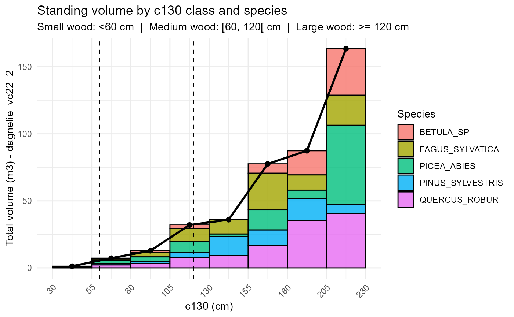

plot_by_class.RdThis function builds a cross-tabulated volume table by species and c130 classes, adds a TOTAL row per class, optionally exports the table as a CSV, and returns a ggplot object showing the volume distribution by c130 class.
plot_by_class(
data,
volume_col = "dagnelie_vc22_2",
breaks = seq(30, 230, by = 25),
small_limit = 60,
medium_limit = 120,
output = NULL,
make_plot = TRUE
)A data frame containing at least:
c130: stem circumference at 1.30 m (cm),
species_code: species identifier,
a volume column (defaults to "dagnelie_vc22_2").
Name of the column containing tree volume (string).
Defaults to "dagnelie_vc22_2".
Numeric vector defining c130 class boundaries (cm).
Default is seq(30, 230, by = 25).
Threshold between small and medium wood (cm of c130). A vertical dashed line is drawn at this value in the plot. Default is 60.
Threshold between medium and large wood (cm of c130). A vertical dashed line is drawn at this value in the plot. Default is 120.
Optional file path where the cross-tabulated table should be
exported as a CSV. If NULL (default), no file is written.
Export is handled by the utility function export_output().
Logical; if TRUE (default), a ggplot object is
created and returned alongside the table.
A list with two components:
table: data frame with species as rows and c130 classes
as columns, plus a TOTAL row.
plot: a ggplot2 object (or NULL if
make_plot = FALSE).
The table has:
rows = species (plus a "TOTAL" row),
columns = c130 classes (e.g. [30,55), [55,80), ...),
cells = summed volume per species and c130 class.
The plot shows a volume-weighted histogram (or barchart) by c130 class, stacked by species, with a trend line for total volume per class and dashed vertical lines marking small, medium and large wood thresholds.
The c130 classes are built with cut() using breaks as class
boundaries and an open-ended last class (using Inf as the upper
bound). The resulting factor labels (e.g. "[30,55)") are used as
column names in the cross-tabulated table.
For the plot, volume is used as a weight so that bar heights represent total volume per c130 class. A trend line is computed from total volume per class midpoint using the same binning scheme.
# Simulated dataset with 150 trees
set.seed(123)
n <- 150
c130 <- runif(n, 30, 230)
htot <- 0.25 * c130 + rnorm(n, 0, 3)
htot <- pmax(5, pmin(htot, 45))
species_list <- c(
"PINUS_SYLVESTRIS", "PICEA_ABIES",
"QUERCUS_ROBUR", "FAGUS_SYLVATICA", "BETULA_SP"
)
species_code <- sample(species_list, n, replace = TRUE)
df <- data.frame(
c130 = round(c130, 1),
htot = round(htot, 1),
species_code = species_code
)
# Example: compute Dagnelie tarif 2 volume, then summarise and plot
df <- dagnelie_vc22_2(df)
#> Warning: c130 out of range for 9 tree(s): row 5 (species BETULA_SP, min=36, max=200, found=218.1) | row 35 (species BETULA_SP, min=36, max=200, found=34.9) | row 59 (species BETULA_SP, min=36, max=200, found=209) | row 74 (species QUERCUS_ROBUR, min=36, max=298, found=30.1) | row 87 (species BETULA_SP, min=36, max=200, found=227) | row 106 (species BETULA_SP, min=36, max=200, found=208.1) | row 111 (species BETULA_SP, min=36, max=200, found=217.1) | row 132 (species BETULA_SP, min=36, max=200, found=208.3) | row 143 (species QUERCUS_ROBUR, min=36, max=298, found=32.1)
#> Warning: htot out of range for 67 tree(s): row 2 (species BETULA_SP, min=8, max=30, found=45) | row 4 (species FAGUS_SYLVATICA, min=8, max=42, found=45) | row 5 (species BETULA_SP, min=8, max=30, found=45) | row 7 (species PINUS_SYLVESTRIS, min=10, max=34, found=35.1) | row 8 (species PICEA_ABIES, min=8, max=42, found=45) | row 9 (species PINUS_SYLVESTRIS, min=10, max=34, found=37) | row 11 (species QUERCUS_ROBUR, min=8, max=34, found=45) | row 13 (species QUERCUS_ROBUR, min=8, max=34, found=42.7) | row 14 (species PINUS_SYLVESTRIS, min=10, max=34, found=35.2) | row 16 (species PICEA_ABIES, min=8, max=42, found=45) | row 20 (species QUERCUS_ROBUR, min=8, max=34, found=45) | row 21 (species PICEA_ABIES, min=8, max=42, found=45) | row 22 (species BETULA_SP, min=8, max=30, found=45) | row 23 (species FAGUS_SYLVATICA, min=8, max=42, found=44.1) | row 24 (species PICEA_ABIES, min=8, max=42, found=45) | row 25 (species PINUS_SYLVESTRIS, min=10, max=34, found=37.2) | row 27 (species PINUS_SYLVESTRIS, min=10, max=34, found=35.5) | row 31 (species PICEA_ABIES, min=8, max=42, found=45) | row 32 (species PICEA_ABIES, min=8, max=42, found=45) | row 34 (species QUERCUS_ROBUR, min=8, max=34, found=45) | row 37 (species QUERCUS_ROBUR, min=8, max=34, found=45) | row 50 (species PINUS_SYLVESTRIS, min=10, max=34, found=45) | row 51 (species FAGUS_SYLVATICA, min=8, max=42, found=7.8) | row 53 (species PINUS_SYLVESTRIS, min=10, max=34, found=45) | row 55 (species QUERCUS_ROBUR, min=8, max=34, found=35.3) | row 58 (species BETULA_SP, min=8, max=30, found=45) | row 59 (species BETULA_SP, min=8, max=30, found=45) | row 61 (species PICEA_ABIES, min=8, max=42, found=44.1) | row 62 (species PICEA_ABIES, min=8, max=42, found=7.9) | row 65 (species FAGUS_SYLVATICA, min=8, max=42, found=43.9) | row 67 (species QUERCUS_ROBUR, min=8, max=34, found=45) | row 68 (species QUERCUS_ROBUR, min=8, max=34, found=43.4) | row 69 (species FAGUS_SYLVATICA, min=8, max=42, found=42.7) | row 71 (species QUERCUS_ROBUR, min=8, max=34, found=43.6) | row 73 (species PICEA_ABIES, min=8, max=42, found=45) | row 78 (species QUERCUS_ROBUR, min=8, max=34, found=39.1) | row 82 (species FAGUS_SYLVATICA, min=8, max=42, found=42.6) | row 84 (species BETULA_SP, min=8, max=30, found=45) | row 87 (species BETULA_SP, min=8, max=30, found=45) | row 88 (species QUERCUS_ROBUR, min=8, max=34, found=45) | row 89 (species PICEA_ABIES, min=8, max=42, found=45) | row 92 (species FAGUS_SYLVATICA, min=8, max=42, found=42.1) | row 94 (species QUERCUS_ROBUR, min=8, max=34, found=41.9) | row 97 (species BETULA_SP, min=8, max=30, found=45) | row 99 (species BETULA_SP, min=8, max=30, found=37.2) | row 101 (species PINUS_SYLVESTRIS, min=10, max=34, found=34.2) | row 104 (species PICEA_ABIES, min=8, max=42, found=45) | row 106 (species BETULA_SP, min=8, max=30, found=45) | row 107 (species PINUS_SYLVESTRIS, min=10, max=34, found=45) | row 108 (species QUERCUS_ROBUR, min=8, max=34, found=36.9) | row 111 (species BETULA_SP, min=8, max=30, found=45) | row 114 (species FAGUS_SYLVATICA, min=8, max=42, found=45) | row 115 (species PINUS_SYLVESTRIS, min=10, max=34, found=42) | row 118 (species FAGUS_SYLVATICA, min=8, max=42, found=45) | row 119 (species PINUS_SYLVESTRIS, min=10, max=34, found=34.1) | row 121 (species QUERCUS_ROBUR, min=8, max=34, found=45) | row 126 (species QUERCUS_ROBUR, min=8, max=34, found=45) | row 132 (species BETULA_SP, min=8, max=30, found=45) | row 133 (species QUERCUS_ROBUR, min=8, max=34, found=39.4) | row 134 (species PICEA_ABIES, min=8, max=42, found=45) | row 136 (species BETULA_SP, min=8, max=30, found=40.8) | row 137 (species PICEA_ABIES, min=8, max=42, found=45) | row 138 (species QUERCUS_ROBUR, min=8, max=34, found=45) | row 139 (species QUERCUS_ROBUR, min=8, max=34, found=45) | row 143 (species QUERCUS_ROBUR, min=8, max=34, found=5.9) | row 145 (species PINUS_SYLVESTRIS, min=10, max=34, found=45) | row 150 (species PINUS_SYLVESTRIS, min=10, max=34, found=43)
res <- plot_by_class(df, volume_col = "dagnelie_vc22_2")
# Inspect the table
res$table
#> # A tibble: 6 × 9
#> species_code `[30,55)` `[55,80)` `[80,105)` `[105,130)` `[130,155)`
#> <chr> <dbl> <dbl> <dbl> <dbl> <dbl>
#> 1 BETULA_SP 0.232 0.612 1.24 2.74 0
#> 2 FAGUS_SYLVATICA 0.310 1.23 3.33 9.53 10.7
#> 3 PICEA_ABIES 0.303 2.21 3.46 8.48 1.99
#> 4 PINUS_SYLVESTRIS 0.356 1.03 1.48 3.39 13.9
#> 5 QUERCUS_ROBUR 0.0609 2.21 3.31 7.90 9.39
#> 6 TOTAL 1.26 7.30 12.8 32.0 36.0
#> # ℹ 3 more variables: `[155,180)` <dbl>, `[180,205)` <dbl>, `[205,230)` <dbl>
# Print the plot
print(res$plot)
